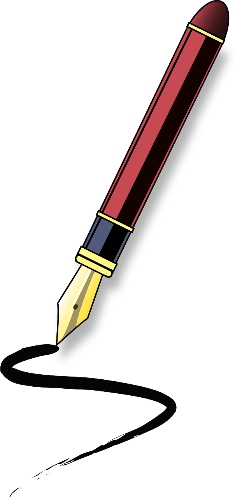

Blog Post about Calligraphy
I decided to do this blog about calligraphy because I love trying out calligraphy myself. I think the topic is also suitable for a blog entry.
Calligraphy is art. Art wrapped in letters, squiggles and lines. It is a way of giving words a beauty and harmony. The fine strokes and curves make the word or text aesthetically pleasing in a special way and it is almost a small work of art.
Calligraphy is thought to have first appeared in ancient China. At that time, these characters were carved and not "written". For example, in animal bones or turtle shells. In the course of time, this was replaced by Chinese ink brushes, and then people also started writing on paper.
Calligraphy is called «the art of beautiful handwriting».
It comes from the Greek, from "kallos" = beauty and "graphein" = to write.
During the Han dynasty (206 BCE – 220 CE), calligraphy became more widely used. All educated men and individual women were expected to learn and then use this art.
Calligraphy can be broadly divided into four categories: Eastern Asian Calligraphy, Southern Asian Calligraphy, Western Calligraphy Islamic Calligraphy.
Send Email
